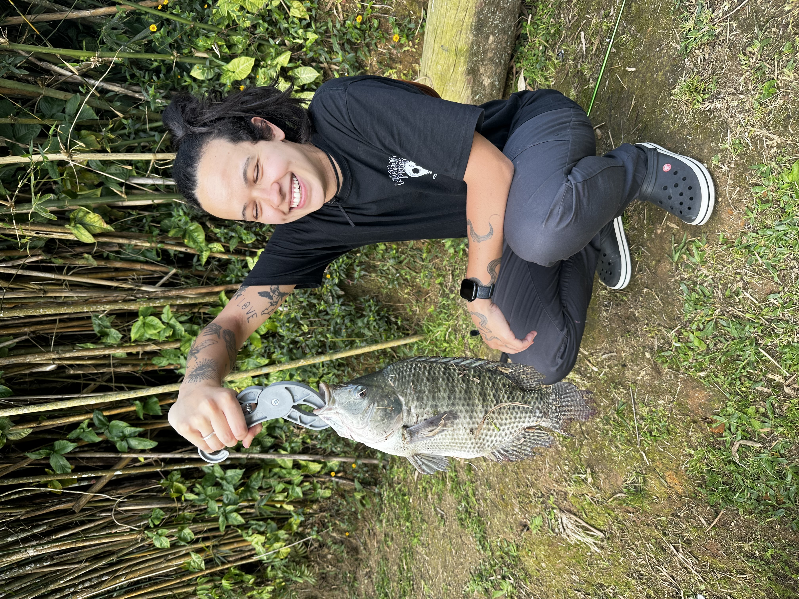
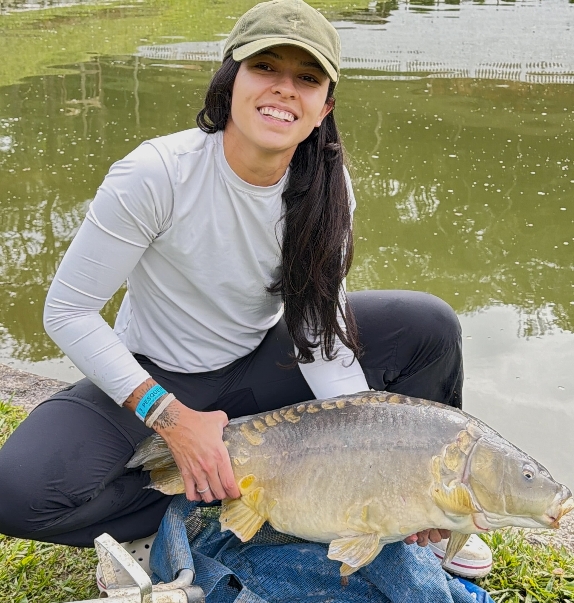
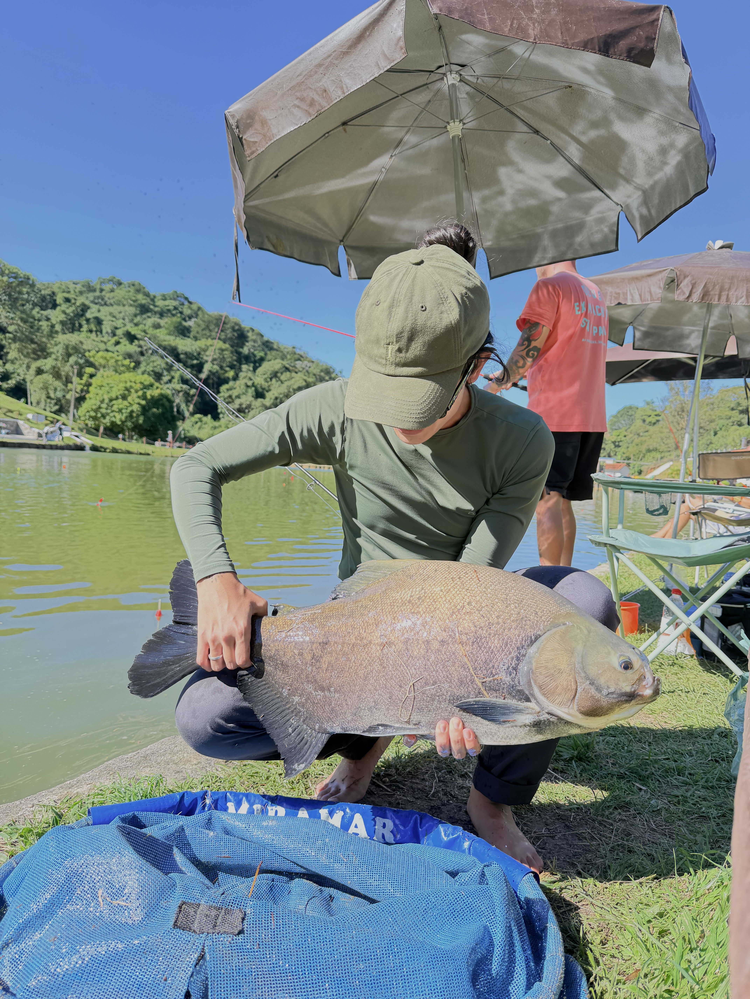
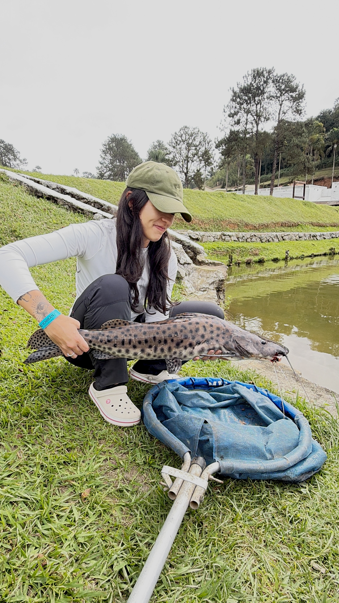
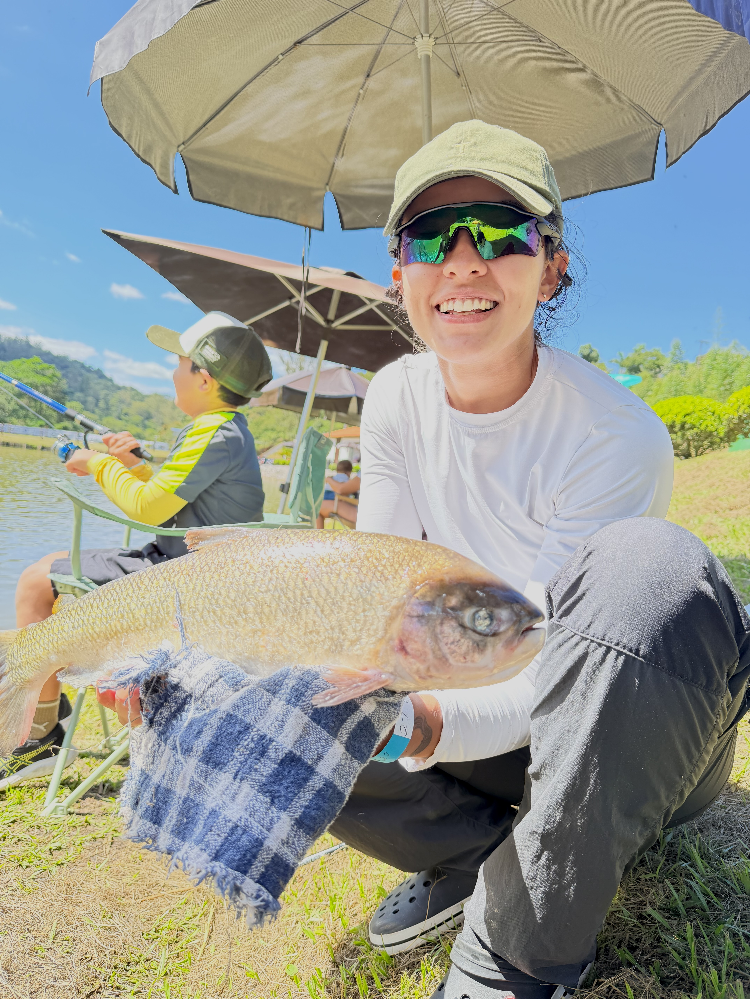
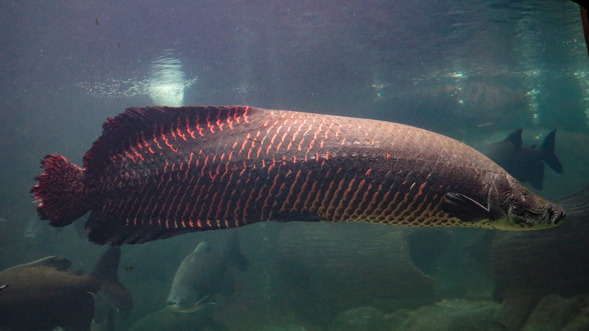

GUIA 01 - EDIÇÃO PESQUEIROS
Espécies de Peixes
Conhecer o peixe muda a forma de observar o lago. Explore sete presenças dos pesqueiros, seus hábitos e os cuidados que cada um pede

01
Tilápia
Pequenos sinais, grandes aprendizados.
Características
A tilápia é um peixe de água doce muito comum nos pesqueiros brasileiros. Possui corpo comprido lateralmente, escamas resistentes e coloração que varia entre tons de cinza e verde. É conhecida pela facilidade de adaptação a diferentes ambientes e pela grande popularidade na pesca recreativa.
Alimentação
É uma espécie onívora, alimentando-se de algas, pequenos organismos aquáticos, larvas e matéria vegetal. Nos pesqueiros, pode ser atraída por diferentes tipos de iscas, como massas preparadas, ração e minhoca.
Comportamento
Costuma frequentar regiões mais rasas e áreas mais próximas à vegetação. Pode apresentar comportamento cauteloso, especialmente em locais com grande movimentação de pescadores. Durante o período reprodutivo, os machos podem demonstrar territorialidade.
Curiosidade
Apresenta um comportamento reprodutivo interessante: a fêmea protege os ovos e os filhotes dentro da própria boca, aumentando suas chances de sobrevivência.

02
Carpa
Nem toda carpa se alimenta do mesmo jeito.
Características
A carpa é um peixe de água doce conhecido pelo corpo robusto, escamas grandes e resistência durante a captura. Dependendo da variedade, pode apresentar diferentes padrões de coloração. É uma espécie bastante encontrada em lagos e pesqueiros..
Alimentação
Possui alimentação onívora, consumindo pequenos invertebrados, larvas, sementes e matéria vegetal. Nos pesqueiros, costuma ser atraída por massas, milho e rações preparadas para pesca.
Comportamento
A carpa costuma procurar alimento próximo ao fundo, movimentando o sedimento enquanto explora o ambiente. Pode ser desconfiada diante de movimentações bruscas e apresenta resistência considerável quando fisgada.
Curiosidade
A carpa comum possui pequenos apêndices sensoriais próximos à boca, chamados barbilhões, que ajudam a localizar alimentos no fundo de ambientes aquáticos.

03
Tambaqui
Peixe amazônico com identidade própria.
Características
O tambaqui é um peixe de água doce nativo da região amazônica. Possui corpo alto, arredondado e musculoso, além de uma mandíbula forte. É bastante valorizado nos pesqueiros por seu tamanho e pela resistência que oferece durante a captura.
Alimentação
É uma espécie onívora que consome frutos, sementes, pequenos organismos aquáticos e outros alimentos disponíveis no ambiente. Nos pesqueiros, pode ser atraída por frutas, massas e rações.
Comportamento
Apresenta natação vigorosa e pode realizar arrancadas intensas quando fisgado. Sua atividade alimentar varia conforme as condições da água, a temperatura e a disponibilidade de alimento.
Curiosidade
Apresenta um comportamento reprodutivo interessante: a fêmea protege os ovos e os filhotes dentro da própria boca, aumentando suas chances de sobrevivência.

04
Pintado
Nas profundezas, a paciência encontra sua recompensa.
Características
O pintado é um peixe de couro de água doce, reconhecido pelo corpo alongado, ausência de escamas e manchas escuras distribuídas pela pele. Possui cabeça achatada e longos barbilhões próximos à boca.
Alimentação
É uma espécie carnívora, alimentando-se principalmente de outros peixes. Nos pesqueiros, pode ser atraída por iscas naturais, como pedaços de peixe e outras iscas permitidas pelo estabelecimento.
Comportamento
Costuma permanecer próximo ao fundo e apresenta maior atividade em períodos de pouca luminosidade. Utiliza seus sentidos para localizar presas, especialmente em águas com baixa visibilidade.
Curiosidade
Os barbilhões do pintado funcionam como importantes estruturas sensoriais, ajudando o peixe a perceber o ambiente e localizar alimento mesmo quando a visibilidade é reduzida.

05
Matrinxã
Agilidade nas águas, emoção em cada fisgada.
Características
O pirarucu é um dos maiores peixes de água doce do mundo. Possui corpo alongado, escamas grandes e resistentes e coloração que pode apresentar tons avermelhados, principalmente na região posterior do corpo. É uma espécie nativa da bacia amazônica.
Alimentação
É predominantemente carnívoro, alimentando-se principalmente de peixes e outros pequenos animais aquáticos. Nos pesqueiros, sua alimentação é controlada conforme o manejo realizado pelo estabelecimento.
Comportamento
Apresenta grande força e movimentos vigorosos. Uma de suas características mais marcantes é a necessidade de subir periodicamente à superfície para respirar ar atmosférico.
Curiosidade
Diferentemente da maioria dos peixes, o pirarucu depende da respiração aérea para sobreviver. Ele possui uma bexiga natatória modificada que funciona como órgão respiratório, permitindo a absorção de oxigênio diretamente do ar.

06
Pirarara
Força imponente, encontros que ficam na memória.
Características
A pirarara é um peixe de couro de grande porte, facilmente reconhecido pela cabeça larga, corpo robusto e coloração marcante. Apresenta tons escuros na parte superior do corpo, regiões claras e nadadeiras com tonalidades alaranjadas ou avermelhadas.
Alimentação
É uma espécie onívora com forte tendência carnívora, consumindo peixes, crustáceos e outros alimentos de origem animal, além de frutos em determinadas situações. Nos pesqueiros, costuma ser atraída por iscas naturais.
Comportamento
Costuma explorar regiões próximas ao fundo e possui grande força durante a captura. Quando fisgada, pode realizar arrancadas intensas, exigindo equipamentos resistentes e controle adequado da linha.
Curiosidade
O nome pirarara está associado à coloração avermelhada de suas nadadeiras. A espécie pode atingir grandes dimensões, sendo considerada um dos peixes de couro mais impressionantes da América do Sul.

07
Pirarucu
Um gigante que carrega a grandeza das águas brasileiras.
Características
A tilápia é um peixe de água doce muito comum nos pesqueiros brasileiros. Possui corpo comprido lateralmente, escamas resistentes e coloração que varia entre tons de cinza e verde. É conhecida pela facilidade de adaptação a diferentes ambientes e pela grande popularidade na pesca recreativa.
Alimentação
É uma espécie onívora, alimentando-se de algas, pequenos organismos aquáticos, larvas e matéria vegetal. Nos pesqueiros, pode ser atraída por diferentes tipos de iscas, como massas preparadas, ração e minhoca.
Comportamento
Costuma frequentar regiões mais rasas e áreas mais próximas à vegetação. Pode apresentar comportamento cauteloso, especialmente em locais com grande movimentação de pescadores. Durante o período reprodutivo, os machos podem demonstrar territorialidade.
Curiosidade
Apresenta um comportamento reprodutivo interessante: a fêmea protege os ovos e os filhotes dentro da própria boca, aumentando suas chances de sobrevivência.